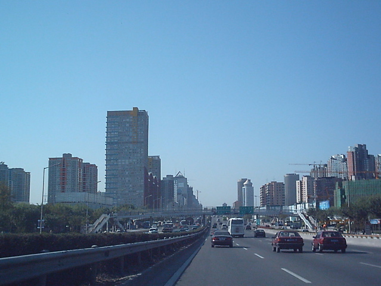

- Title Page
- Introduction
- Becoming an environmentalist
- Obstacles to enforcement
- “We must fight with data”
- China Pollution Maps launched
- Taking on supply chains
- Pollution Information Transparency Index
- Tainted milk, heavy metals—and more
- Poison Apple
- Green investment
- Blueprint for blue skies
- Real-time data begins
- Real-time dilemma
- Appendix 1
- Appendix 2
- Appendix 3
- Appendix 4
Blueprint for blue skies
The Chinese government couldn’t contain the demand for real-time data. In this format, air quality information seemed more credible to the public than daily averages did, and certainly more useful than annual averages. From 2008 on, hourly readings from the US Embassy were reposted on Sino Weibo, a microblogging and social media site with hundreds of millions of registered users, and programmers developed corresponding apps for smart phones. The US consulates in Shanghai and Guangzhou began posting their own air quality readings. Urban residents used the information like a weather forecast. Depending on the reading, they might avoid exercise, keep their children indoors or wear a facemask. Long stretches of hazardous readings convinced many that the smog was causing lasting harm to their health. The wealthy bought air purifiers, took “clean air vacations” in more pristine places, or bought second homes outside the city. In Beijing, where pollution was particularly heavy, expatriates started to turn down postings or demanded hardship pay.
Monitoring transparency. Ma Jun looked for ways to leverage the growing public outrage over air pollution and its desire for real-time data. He started, as before, by laying a foundation of information. In collaboration with the Law School at People’s University, a top-ranked public university in Beijing, IPE in January 2011 published a report assessing the transparency of air quality monitoring in 20 Chinese cities as compared to 10 international cities. The report found China sorely lagging.[31] It concluded with a series of recommendations to the government (see Appendix 3), in brief:
* Include PM2.5 and other pollutants in air quality monitoring—not just PM10 readings
* Make the readings available to the public
* Increase the number of monitoring sites in each city, for a more accurate representation
* Release the data in real time
* Link data to a map
* Provide daily, hourly and historical readings
* Revise air quality standards periodically, as more is learned about the impact on human and environmental health
* Develop an early warning system to alert the public to hazardous conditions, and advise on protection measures (e.g., staying indoors)
* Encourage communities to develop emergency measures to quickly reduce air pollution (e.g., temporarily shutting down factories and limiting traffic)

Beijing skyline
If taken, these measures would give people across China, in cities large and small, a clearer understanding of their immediate environment. The more they knew, the more they would care, Ma and his team believed. While information transparency was essential, however, the researchers’ ultimate goal was a return of blue skies, healthy water and safe soil. To focus public attention on the longer-term challenges of environmental remediation, IPE developed and published in December 2011 a “blue skies roadmap.”[32] The plan emphasized that the government should monitor and publish not only aggregate levels of pollution (e.g., by city or river basin), but also individual sourcesof pollution. There were four parts to the roadmap:
Step I. Monitor pollutants and make data available
Step II. Implement health alerts and emergency measures for mitigating pollution
Step III. Investigate the sources of pollution
Step IV. Formulate a plan and schedule for reducing emissions at those sources
The government was in the process of implementing steps I and II, the report affirmed. Now it needed to identify the country’s largest industrial polluters and monitor their emissions. IPE was convinced that the emissions data should be made public as a way to strengthen enforcement. The report conveyed IPE’s logic:
To resolve the problem of atmospheric pollution, pollutant discharge must be controlled. In order to control the discharge of pollutants, the first step is to start with the identification of pollutant sources. Owing to the complexity of atmosphere pollution sourcing and in view of China’s lax environmental supervision and the low cost associated with violating, the public must be allowed to understand the sources of pollutants so that they can then take part in the supervision and management of atmospheric pollution.[33]

The "Blue Skies" report
In the Roadmap report, IPE urged the government to focus on the key state-monitored enterprises—the 15,000 heaviest emitters identified and published by the MEP every year. These SOEs already had pollution monitors installed, but emissions data were kept under wraps by EPBs. IPE suggested that the government publish the company information in real time and link the data to an interactive online map. It also recommended that the government track a greater number of chemicals (not just nitrogen dioxide and sulfur dioxide, as was common). IPE proposed in its report that the real-time information disclosure provide a basis for implementing economic initiatives (such as green credits, green stocks and bonds, and green lending) that would encourage large emitters to reduce emissions and clean up their supply chains.
In February 2012, IPE followed up with a petition delivered directly to the central government during the annual meeting of the National People’s Congress. The petition asked the government to create a centralized (i.e., national or provincial-level) platform and begin release, with real-time updates, of the SOEs’ emissions data. It asked the government to require companies to report annually the total amounts of chemicals disposed of, transported, or transferred, as PRTRs required in other countries. It also demanded that environmental impact assessments be released in their entirety (traditionally, the public received only abbreviated assessments). IPE was demanding a lot, but many of the measures were already in the late stages of consideration by the government. At times, IPE researchers felt they were pushing on an open door.
Whether in response to IPE’s recommendations or to popular demand, a string of policy changes soon followed. On March 2,2012, MEP Vice Minister Wu Xiaoping introduced revisions to China’s Ambient Air Quality Standards. For the first time, they would take into account PM2.5 and ground-level ozone. Maximum allowable levels of pollutants were lowered, and hourly limits were added (previous standards included only annual limits), bringing the guidelines closer to WHO standards.[34] Additionally, 74 cities, including Beijing, would provide hourly PM2.5 readings to the public by the end of the year.
There were other signs that the government was taking the problem of pollution seriously. The Party’s 12th Five-Year Plan (2011-2015) emphasized climate change and the environment as never before, setting targets for pollution reduction, energy efficiency, and GDP growth based on more sustainable development. In June 2013, the MEP announced a Clean Air Action Plan to reduce PM2.5 concentrations 25 percent over 2012 levels, to which the central government would commit $277 billion over five years.
IPE could cite considerable progress on air pollution transparency, noting in a report that Chinese cities had established more monitoring sites within their boundaries, were taking more frequent readings and were disclosing the concentration of more types of chemicals. Some cities were publishing the data on digital maps and Weibo.[35] But real-time point-of-emissions disclosure was still an aspiration.
[31] IPE and Renmin University of China Law School, A Threat To Public Health: China’s Urban Air Quality Disclosure Needs Urgent Improvement: 2010 Annual Urban Air Quality Transparency Index (AQTI) Results and Comparative Study of 20 Domestic and 10 International Cities, January 19, 2011, p.32.
See: http://www.ipe.org.cn/Upload/Report-AQTI-EN.pdf
[32] A Roadmap to Blue Skies: China’s Atmospheric Pollution Source Positioning Report (December 2011).
See: http://www.ipe.org.cn/Upload/Report-Positioning-EN.pdf
[33] Ibid, 2.
[34] For a comparison of China’s New Ambient Air Quality Standards to WHO standards, see: http://cleanairinitiative.org/portal/node/8163
[35] IPE et al., Small Particles, Big Breakthrough 2012 Urban Air Quality Information Transparency Index (October 2012). See: http://www.ipe.org.cn/Upload/Report-AQTI-2012-EN.pdf